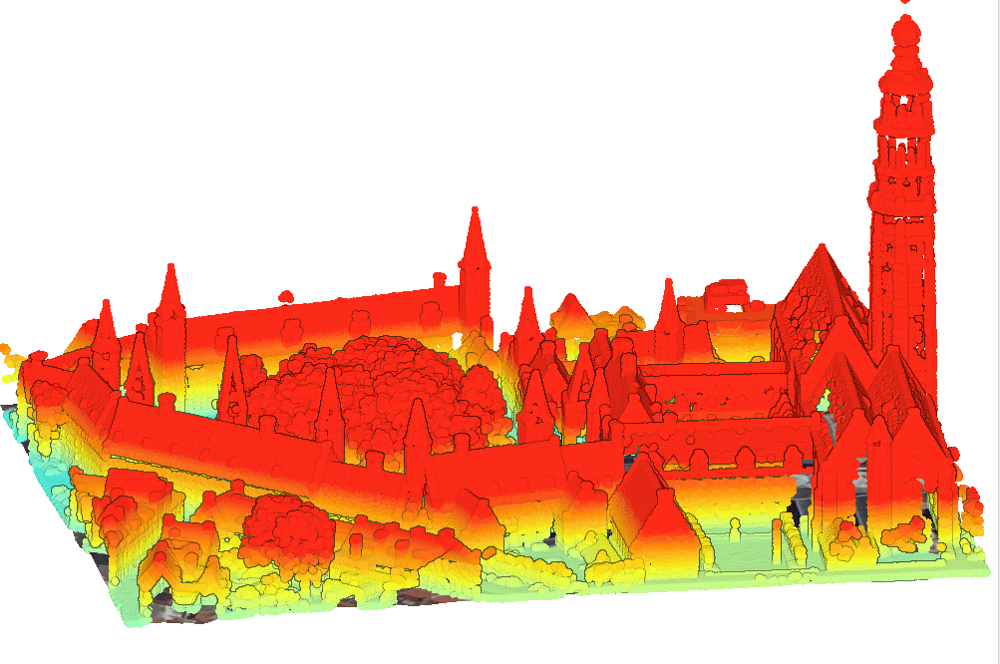

3D Mapping of The Middelburg Town Hall, NL

You are looking at a 3D relief map of the town hall building in Middelburg. This was created by importing four different datasets of LiDar Data for the same area and blending them as needed. One of the important things that I had learnt when creating this map was to know when to give up, and also how to interpret LiDar data. I had ran into a large amount of issues while working on the project. Most of the tools that I needed to use just didnt logically connect in my brain. I imagine if I had wathced a Youtube video on it, the concept would click a lot easier in my head. But between mooving out and the many hours I worked on this, I just didn't have the energy to commit to this project. So insted of an interactive 3D Lidar Map, I have uploaded this screenshot of my work.
Back to My Work
Back Home